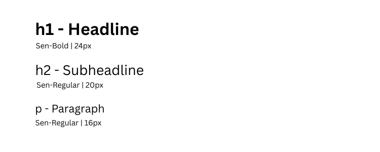
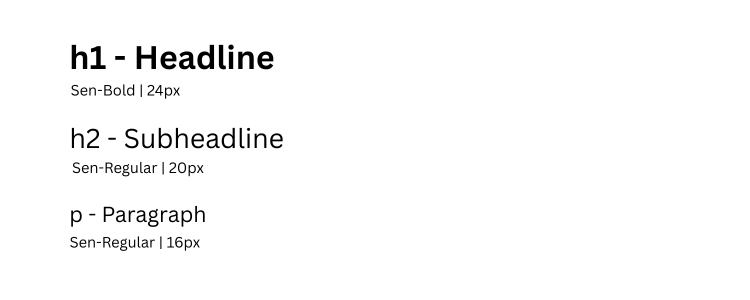

Feed Forward
Where Every Meal Matters!

Overview
FeedForward is a socially-driven mobile app that bridges the gap between surplus food and those who need it most. With features like real-time tracking, in-app chat, and volunteer delivery booking, it ensures food reaches the right hands efficiently.
This project was developed as part of our Final Year Design Project (FYDP), aiming to address food insecurity and reduce waste in Pakistan through technology.
The Challenge
In Pakistan, over 36 million tons of food is wasted annually, while approximately 37% of the population faces food insecurity. Restaurants, hotels, and food retailers often discard edible surplus food due to a lack of structured redistribution systems. Despite this alarming contrast between waste and hunger, there is no widely adopted, efficient, or transparent platform that connects food donors with communities in need. This results in not only massive food loss and economic waste, but also unfulfilled social responsibility in a country where millions struggle daily to access a nutritious meal.
The Solution
FeedForward bridges the gap between food surplus and community need through a mobile platform that enables restaurants to quickly list excess food items. Users can view, request, or purchase these items at reduced prices or for free. To enhance transparency and efficiency, the app includes features like real-time order tracking, in-app chat between donors, recipients, and volunteers, as well as impact dashboards, volunteer delivery support, and personalized user profiles. Together, these features make food redistribution smarter, faster, and more human-centered.
Design Process
We followed a user-centered design approach, conducting extensive research with both restaurants and potential recipients to understand pain points in existing food redistribution systems.
Research & Discovery
Conducted interviews with 15 restaurant owners and 30 potential users to understand pain points. Discovered that restaurants needed a quicker way to list food while maintaining brand presentation, and recipients wanted more transparency about food quality and pickup logistics.
Wireframing & Prototyping
Created low-fidelity wireframes focusing on the food listing and reservation flows. Developed interactive prototypes in Figma to test different approaches to the negotiation feature, which allowed users to make offers on listed items.
User Testing
Conducted three rounds of testing with restaurant staff and community users. Key findings led us to simplify the listing process and add more prominent food safety information. Also refined the impact visualization based on user feedback.
Visual Design
Established a warm, approachable visual language with food-inspired colors and organic shapes. Developed custom illustrations to guide users through empty states and onboarding.
Key Features
The app combines practical functionality with thoughtful design touches to create a seamless experience that addresses the unique needs of both food providers and recipients.
Quick Listing
Restaurants can list surplus food items using smart defaults and photo presets. The intuitive interface guides them through adding key details like item name, quantity, price, pickup time, and oher details ensuring quick uploads.
Smart Discovery
Users can browse available food with intelligent filters for distance, price, number of meals, and pickup times. The map view shows real-time availability in their area.
Flexible Negotiation
A unique feature allows users to make offers on listed items, helping restaurants recover costs while making food more accessible.
Impact Tracking
Both restaurants and users can view the environmental and social impact of their contributions, including metrics such as food waste prevented, and meals distributed making every transaction meaningful and transparent.
Real-time Order Tracking
Integrated GPS tracking lets users follow their order from preparation to pickup, with live updates and estimated arrival times.
In-App Chat
Secure messaging between restaurants and users for coordination, special requests, or pickup instructions.
General App Screens


Receiver Screens


Volunteer Screens

Visual Design
The visual design balances warmth and professionalism, with a color palette inspired by fresh produce and typography that ensures readability across all user demographics.
Color Palette
We chose a primary green tone that evokes freshness and sustainability, complemented by warm secondary colors inspired by different food groups. High contrast was maintained for accessibility.
Typography
Inter was used as the primary typeface for its excellent readability on mobile screens. We established a clear typographic hierarchy with size, weight, and color to guide users through complex flows like the negotiation process.
 

Behind the Code
The technical journey of bringing FeedForward to life, featuring our architecture decisions and innovative solutions to complex challenges. I and my team utilized Expo Go for rapid React Native development, enabling seamless testing across devices. We built a robust backend with Node.js and Express, leveraging MongoDB Atlas for geospatial data queries and real-time updates.
Tech Stack
React Native
Cross-platform app development with 98% code sharing
Node.js + Express
Real-time API handling 500+ requests/minute
MongoDB Atlas
Geospatial queries for location-based matching
Testing & Validation
Comprehensive quality assurance process combining manual testing and code quality analysis
Manual Testing
- Executed 500+ test cases covering all user flows
- Verified UI consistency across 3 device types
- Conducted real-world scenario testing with actual users
Automated Testing
- API contract testing with Postman collections
Code Quality
- Integrated SonarCloud for static code analysis
- Maintained 98% code coverage threshold
- Zero critical vulnerabilities detected
- A rating for maintainability
Evaluator's Feedback
A unique solution and very well implemented.